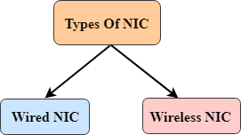

Computer Network
Computer Network Components
Computer network components are the major parts which are needed to install the software. Some important network components are NIC, switch, cable, hub, router, and modem. Depending on the type of network that we need to install, some network components can also be removed. For example, the wireless network does not require a cable.
Following are the major components required to install a network:
NIC
- NIC stands for network interface card.
- NIC is a hardware component used to connect a computer with another computer onto a network
- It can support a transfer rate of 10,100 to 1000 Mb/s.
- The MAC address or physical address is encoded on the network card chip which is assigned by the IEEE to identify a network card uniquely. The MAC address is stored in the PROM (Programmable read-only memory).
There are two types of NIC:
- Wired NIC
- Wireless NIC
Wired NIC: The Wired NIC is present inside the motherboard. Cables and connectors are used with wired NIC to transfer data.
Wireless NIC: The wireless NIC contains the antenna to obtain the connection over the wireless network. For example, laptop computer contains the wireless NIC.
Hub
A Hub is a hardware device that divides the network connection among multiple devices. When computer requests for some information from a network, it first sends the request to the Hub through cable. Hub will broadcast this request to the entire network. All the devices will check whether the request belongs to them or not. If not, the request will be dropped.
The process used by the Hub consumes more bandwidth and limits the amount of communication. Nowadays, the use of hub is obsolete, and it is replaced by more advanced computer network components such as Switches, Routers.
Switch
A switch is a hardware device that connects multiple devices on a computer network. A Switch contains more advanced features than Hub. The Switch contains the updated table that decides where the data is transmitted or not. Switch delivers the message to the correct destination based on the physical address present in the incoming message. A Switch does not broadcast the message to the entire network like the Hub. It determines the device to whom the message is to be transmitted. Therefore, we can say that switch provides a direct connection between the source and destination. It increases the speed of the network.
Router
- A router is a hardware device which is used to connect a LAN with an internet connection. It is used to receive, analyze and forward the incoming packets to another network.
- A router works in a Layer 3 (Network layer) of the OSI Reference model.
- A router forwards the packet based on the information available in the routing table.
- It determines the best path from the available paths for the transmission of the packet.
Advantages Of Router:
- Security: The information which is transmitted to the network will traverse the entire cable, but the only specified device which has been addressed can read the data.
- Reliability: If the server has stopped functioning, the network goes down, but no other networks are affected that are served by the router.
- Performance: Router enhances the overall performance of the network. Suppose there are 24 workstations in a network generates a same amount of traffic. This increases the traffic load on the network. Router splits the single network into two networks of 12 workstations each, reduces the traffic load by half.
- Network range
Modem
- A modem is a hardware device that allows the computer to connect to the internet over the existing telephone line.
- A modem is not integrated with the motherboard rather than it is installed on the PCI slot found on the motherboard.
- It stands for Modulator/Demodulator. It converts the digital data into an analog signal over the telephone lines.
Based on the differences in speed and transmission rate, a modem can be classified in the following categories:
- Standard PC modem or Dial-up modem
- Cellular Modem
- Cable modem
Cables and Connectors
Cable is a transmission media used for transmitting a signal.
There are three types of cables used in transmission:
- Twisted pair cable
- Coaxial cable
- Fibre-optic cable